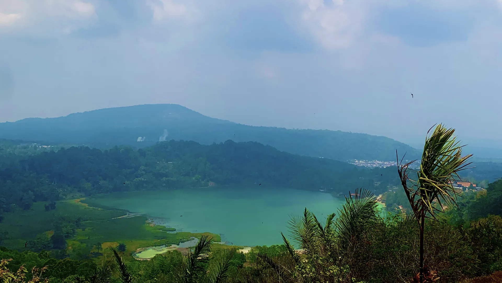

Destinasi Wisata
Dari danau vulkanik tiga warna hingga pemandian air panas alami, berikut destinasi yang bisa dikunjungi di sekitar Kelurahan Lahendong.

Dari danau vulkanik tiga warna hingga pemandian air panas alami, berikut destinasi yang bisa dikunjungi di sekitar Kelurahan Lahendong.